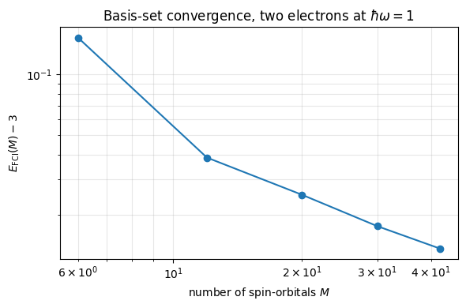
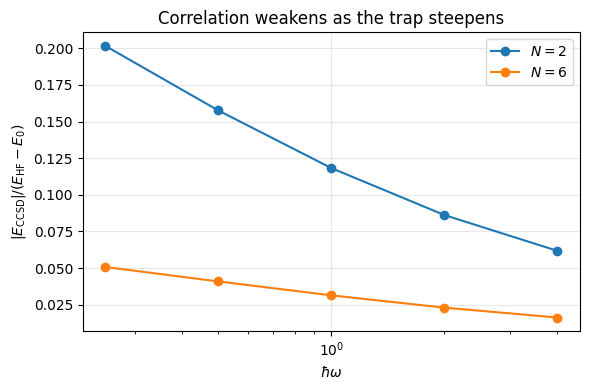
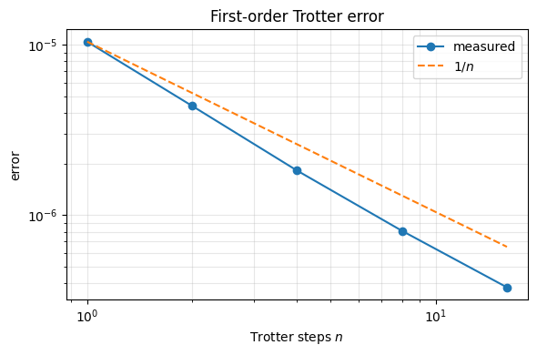

12. Quantum dots: a realistic Hamiltonian#
Executable companion to chapter 11.
Every system so far has been a model with one or two parameters. This one is not: \(N\) electrons confined to two dimensions by a parabolic trap and interacting through the bare Coulomb repulsion,
in natural units \(\hbar = m_e = e = 1\). Every matrix element has to be computed, the single-particle basis is infinite and has to be truncated, and the truncation error has to be controlled alongside the many-body error.
The single-particle basis is the two-dimensional oscillator in polar coordinates, with energies \(\varepsilon_{nm}=\hbar\omega(2n+|m|+1)\), so shells \(N_s = 2n+|m|\) have degeneracy \(2(N_s+1)\) and the closed shells fall at \(N = 2, 6, 12, 20, 30, 42\) — the magic numbers.
Everything after the construction of the one- and two-body matrices is
imported from coupledcluster.py: the same Hartree-Fock, MP2, CCD, CCSD and
unitary coupled-cluster routines that were validated on the pairing model of
chapter 10, applied here unchanged.
import sys
sys.path.insert(0, "../BookManybody/BookMaterial/Programs")
import math
import numpy as np
import matplotlib.pyplot as plt
import quantumdot as qd
from coupledcluster import (ccd, ccsd, hartree_fock, mp2_energy,
reference_energy, UnitaryCC)
12.1. 1. The basis and the magic numbers#
dot = qd.QuantumDot(2, shells=5)
print(f"shells 0-5: {len(dot.spatial)} spatial states, "
f"{dot.n_orbitals} spin-orbitals\n")
print(f"{'N_s':>4s} {'(n, m)':<44s} {'deg.':>5s} {'cumulative N':>13s}")
total = 0
for n_s in range(6):
states = [s for k, s in enumerate(dot.spatial) if dot.shell_of(k) == n_s]
total += 2*len(states)
label = " ".join(f"({n},{m:+d})" if m else f"({n}, 0)" for n, m in states)
print(f"{n_s:4d} {label:<44s} {2*len(states):5d} {total:13d}")
shells 0-5: 21 spatial states, 42 spin-orbitals
N_s (n, m) deg. cumulative N
0 (0, 0) 2 2
1 (0,-1) (0,+1) 4 6
2 (0,-2) (1, 0) (0,+2) 6 12
3 (0,-3) (1,-1) (1,+1) (0,+3) 8 20
4 (0,-4) (1,-2) (2, 0) (1,+2) (0,+4) 10 30
5 (0,-5) (1,-3) (2,-1) (2,+1) (1,+3) (0,+5) 12 42
12.2. 2. The Coulomb matrix element#
Two exact statements do more for us than the closed form itself. Angular momentum is conserved, \(m_p+m_q = m_r+m_s\), which kills most of the index combinations before any work is done; and the whole frequency dependence is a factor \(\sqrt{\hbar\omega}\), so the expensive integrals are computed once.
The lowest element is known analytically: \(\langle 00;00|v|00;00\rangle = \sqrt{\pi/2}\,\sqrt{\hbar\omega}\).
element = qd.coulomb_ho(1.0, 0, 0, 0, 0, 0, 0, 0, 0)
print(f"<00;00|v|00;00> = {element:.12f}")
print(f"sqrt(pi/2) = {math.sqrt(math.pi/2):.12f}")
print(f"agree: {abs(element - math.sqrt(math.pi/2)) < 1e-12}\n")
print("the hw dependence is a pure scale factor:")
for hw in (0.25, 0.5, 1.0, 2.0, 4.0):
value = qd.coulomb_ho(hw, 0, 0, 0, 0, 0, 0, 0, 0)
print(f" hw = {hw:5.2f}: {value:12.8f} "
f"value/sqrt(hw) = {value/math.sqrt(hw):.12f}")
print("\nangular-momentum conservation:")
for label, args in (("<0,+1;0,-1|v|0,0;0,0> (allowed)", (0,1,0,-1,0,0,0,0)),
("<0,+1;0, 0|v|0,0;0,0> (forbidden)", (0,1,0,0,0,0,0,0)),
("<0,+2;0,-1|v|0,+1;0,0> (allowed)", (0,2,0,-1,0,1,0,0)),
("<0,+2;0, 0|v|0,+1;0,0> (forbidden)", (0,2,0,0,0,1,0,0))):
print(f" {label:38s} = {qd.coulomb_ho(1.0, *args):+.8f}")
<00;00|v|00;00> = 1.253314137316
sqrt(pi/2) = 1.253314137316
agree: True
the hw dependence is a pure scale factor:
hw = 0.25: 0.62665707 value/sqrt(hw) = 1.253314137316
hw = 0.50: 0.88622693 value/sqrt(hw) = 1.253314137316
hw = 1.00: 1.25331414 value/sqrt(hw) = 1.253314137316
hw = 2.00: 1.77245385 value/sqrt(hw) = 1.253314137316
hw = 4.00: 2.50662827 value/sqrt(hw) = 1.253314137316
angular-momentum conservation:
<0,+1;0,-1|v|0,0;0,0> (allowed) = +0.31332853
<0,+1;0, 0|v|0,0;0,0> (forbidden) = +0.00000000
<0,+2;0,-1|v|0,+1;0,0> (allowed) = +0.27694591
<0,+2;0, 0|v|0,+1;0,0> (forbidden) = +0.00000000
12.3. 3. Hartree-Fock and the size of the basis#
Adding a shell can only lower the energy: the Hartree-Fock state gains variational freedom and nothing is taken away. Note that some shells change nothing at all for \(N=2\) — the occupied orbital has \(m=0\) and can only mix with other \(m=0\) states, which live in the even shells.
print(f"{'shells':>7s} {'orbitals':>9s} {'N=2 E_HF':>14s} {'dE':>11s} "
f"{'N=6 E_HF':>14s} {'dE':>11s}")
previous = {2: None, 6: None}
for shells in range(0, 6):
n_orb = 2*len(qd.spatial_basis(shells))
row = [f"{shells:7d}", f"{n_orb:9d}"]
for particles in (2, 6):
if n_orb < particles:
row += [f"{'--':>14s}", f"{'--':>11s}"]
continue
e = qd.solve(particles, shells, methods=())["E_HF"]
row.append(f"{e:14.8f}")
row.append(f"{'--':>11s}" if previous[particles] is None
else f"{e-previous[particles]:+11.6f}")
previous[particles] = e
print(" ".join(row))
shells orbitals N=2 E_HF dE N=6 E_HF dE
0 2 3.25331414 -- -- --
1 6 3.25331414 +0.000000 22.21981284 --
2 12 3.16269135 -0.090623 21.59319848 -0.626614
3 20 3.16269135 +0.000000 20.76691943 -0.826279
4 30 3.16192140 -0.000770 20.74840225 -0.018517
5 42 3.16192140 +0.000000 20.72025707 -0.028145
12.4. 4. The hierarchy of methods#
Hartree-Fock, MP2, CCD and CCSD in the full 42-orbital basis at \(\hbar\omega=1\).
results = {n: qd.solve(n, 5) for n in (2, 6)}
print(f"{'quantity':<32s} {'N = 2':>15s} {'N = 6':>15s}")
print("-"*64)
rows = [("non-interacting E_0", lambda r: r["E0"]),
("Hartree-Fock E_HF", lambda r: r["E_HF"]),
(" interaction E_HF - E_0", lambda r: r["E_HF"]-r["E0"]),
("MP2 correlation", lambda r: r["E_MP2"]),
(" total", lambda r: r["E_HF"]+r["E_MP2"]),
("CCD correlation", lambda r: r["E_CCD"]),
(" total", lambda r: r["E_HF"]+r["E_CCD"]),
("CCSD correlation", lambda r: r["E_CCSD"]),
(" total", lambda r: r["E_HF"]+r["E_CCSD"])]
for label, f in rows:
print(f"{label:<32s} {f(results[2]):15.8f} {f(results[6]):15.8f}")
print()
for n in (2, 6):
r = results[n]
print(f"N = {n}: SCF {r['iterations']} iterations, CCD "
f"{r['CCD_iterations']}, CCSD {r['CCSD_iterations']}, "
f"max|t_1| = {r['t1_max']:.2e}")
quantity N = 2 N = 6
----------------------------------------------------------------
non-interacting E_0 2.00000000 10.00000000
Hartree-Fock E_HF 3.16192140 20.72025707
interaction E_HF - E_0 1.16192140 10.72025707
MP2 correlation -0.13488329 -0.41769581
total 3.02703812 20.30256126
CCD correlation -0.14799908 -0.44624450
total 3.01392232 20.27401257
CCSD correlation -0.14829527 -0.44701044
total 3.01362613 20.27324663
N = 2: SCF 15 iterations, CCD 23, CCSD 23, max|t_1| = 5.70e-03
N = 6: SCF 24 iterations, CCD 19, CCSD 28, max|t_1| = 1.01e-02
12.4.1. The singles amplitudes do not vanish#
It is often said that Brillouin’s theorem makes \(T_1 = 0\) for a closed-shell Hartree-Fock reference, so that CCSD reduces to CCD. That is wrong. Brillouin’s theorem gives \(f_{ai}=0\), which is why MP2 has no singles contribution — but the CCSD singles equation contains
which are built from the doubles and survive at \(t_1=0\). The singles are driven by the doubles, they are small but non-zero (about \(10^{-2}\) above), and they describe orbital relaxation. A code that reports \(t_1 = 0\) identically has a bug in its singles equation.
12.5. 5. Two electrons against the exact answer#
With \(N=2\) the determinant space is small enough to diagonalise, and singles and doubles exhaust the excitations available to two particles — so CCSD must be exact within the basis. Checking that is a far stronger test of the coupled-cluster solver than anything the pairing model could provide.
The basis series converges to Taut’s analytic result \(E = 3\) at \(\hbar\omega = 1\), but slowly: the oscillator basis cannot reproduce the Coulomb cusp.
print(f"{'shells':>6s} {'orb':>4s} {'dim':>5s} {'E_HF':>13s} "
f"{'+MP2':>13s} {'+CCD':>13s} {'+CCSD':>13s} {'E_FCI':>13s} "
f"{'|CCSD-FCI|':>11s}")
shells_list, errors = [], []
for shells in (1, 2, 3, 4, 5):
r = qd.solve(2, shells)
exact, n_orb, dim = qd.exact_two_electron(shells)
total = r["E_HF"] + r["E_CCSD"]
shells_list.append(n_orb)
errors.append(exact - 3.0)
print(f"{shells:6d} {n_orb:4d} {dim:5d} {r['E_HF']:13.8f} "
f"{r['E_HF']+r['E_MP2']:13.8f} {r['E_HF']+r['E_CCD']:13.8f} "
f"{total:13.8f} {exact:13.8f} {abs(total-exact):11.1e}")
print(f"{'exact':>6s} {'inf':>4s} {'--':>5s} {'--':>13s} {'--':>13s} "
f"{'--':>13s} {'--':>13s} {3.0:13.8f}")
shells orb dim E_HF +MP2 +CCD +CCSD E_FCI |CCSD-FCI|
1 6 15 3.25331414 3.17856150 3.15232801 3.15232801 3.15232801 2.0e-13
2 12 66 3.16269135 3.05797643 3.03904782 3.03860458 3.03860458 2.3e-13
3 20 190 3.16269135 3.04440370 3.02527309 3.02523058 3.02523058 2.1e-13
4 30 435 3.16192140 3.03341846 3.01794371 3.01760623 3.01760623 3.3e-13
5 42 861 3.16192140 3.02703812 3.01392232 3.01362613 3.01362613 3.5e-13
exact inf -- -- -- -- -- 3.00000000
plt.figure(figsize=(6, 4))
plt.loglog(shells_list, errors, "o-")
plt.xlabel("number of spin-orbitals $M$")
plt.ylabel(r"$E_{\rm FCI}(M) - 3$")
plt.title("Basis-set convergence, two electrons at $\\hbar\\omega=1$")
plt.grid(alpha=0.3, which="both")
plt.tight_layout()
plt.show()

12.6. 6. Six electrons against exact diagonalisation#
At 42 orbitals the six-electron space has \(\binom{42}{6} = 5\,245\,786\) determinants and is out of reach. In the two-shell basis it is only \(\binom{12}{6} = 924\), and there the truncation of the cluster operator genuinely matters — so this is the one place where every method can be compared with the exact answer on a realistic interaction in a non-trivial system.
The unitary result is evaluated at the converged CCSD amplitudes, not at its own variational optimum, and is still the best of the four.
h, v = qd.matrices(2)
h_hf, v_hf, _, _ = hartree_fock(h, v, 6)
f_hf = h_hf + np.einsum("piqi->pq", v_hf[:, :6, :, :6])
e_ref = reference_energy(h_hf, v_hf, 6)
cc_d, cc_sd = ccd(f_hf, v_hf, 6), ccsd(f_hf, v_hf, 6)
ucc = UnitaryCC(h_hf, v_hf, 6, singles=True, doubles=True)
exact = float(np.linalg.eigvalsh(ucc.H)[0])
x = qd.ucc_amplitudes_from_ccsd(ucc, cc_sd["t1"], cc_sd["t2"], 6)
e_ucc = ucc.energy(x)
corr = exact - e_ref
print(f"12 orbitals, determinant space {ucc.dim}, "
f"{ucc.n_amplitudes} amplitudes, E_corr = {corr:.8f}\n")
print(f"{'method':<28s} {'energy':>14s} {'error':>11s} {'% of E_corr':>12s}")
for label, energy in (("Hartree-Fock", e_ref),
("MP2", e_ref + mp2_energy(f_hf, v_hf, 6)),
("CCD", e_ref + cc_d["energy"]),
("CCSD", e_ref + cc_sd["energy"]),
("UCCSD (CCSD amplitudes)", e_ucc),
("exact diagonalisation", exact)):
print(f"{label:<28s} {energy:14.8f} {energy-exact:11.2e} "
f"{100*(energy-e_ref)/corr:11.2f}%")
12 orbitals, determinant space 924, 261 amplitudes, E_corr = -0.17261018
method energy error % of E_corr
Hartree-Fock 21.59319848 1.73e-01 -0.00%
MP2 21.43344056 1.29e-02 92.55%
CCD 21.42380972 3.22e-03 98.13%
CCSD 21.42323158 2.64e-03 98.47%
UCCSD (CCSD amplitudes) 21.42196510 1.38e-03 99.20%
exact diagonalisation 21.42058830 0.00e+00 100.00%
12.7. 7. Dependence on the confinement#
Kinetic energy scales as \(\omega\) and the Coulomb energy as \(\sqrt{\omega}\), so a shallow trap is strongly correlated and a steep one is nearly free. This is the same story the pairing model told through \(g\), now told by a parameter an experimentalist can tune.
frequencies = (0.25, 0.5, 1.0, 2.0, 4.0)
ratios = {}
for particles in (2, 6):
print(f"N = {particles}, shells 0-3")
print(f"{'hw':>7s} {'E_0':>8s} {'E_HF':>13s} {'E_MP2':>12s} "
f"{'E_CCSD':>12s} {'ratio':>8s}")
ratios[particles] = []
for hw in frequencies:
r = qd.solve(particles, 3, hw=hw)
ratio = r["E_CCSD"]/(r["E_HF"]-r["E0"])
ratios[particles].append(ratio)
print(f"{hw:7.2f} {r['E0']:8.3f} {r['E_HF']:13.8f} "
f"{r['E_MP2']:12.8f} {r['E_CCSD']:12.8f} {ratio:8.4f}")
print()
plt.figure(figsize=(6, 4))
for particles in (2, 6):
plt.plot(frequencies, [-x for x in ratios[particles]], "o-",
label=f"$N={particles}$")
plt.xscale("log")
plt.xlabel(r"$\hbar\omega$")
plt.ylabel(r"$|E_{\rm CCSD}| / (E_{\rm HF}-E_0)$")
plt.title("Correlation weakens as the trap steepens")
plt.legend()
plt.grid(alpha=0.3)
plt.tight_layout()
plt.show()
N = 2, shells 0-3
hw E_0 E_HF E_MP2 E_CCSD ratio
0.25 0.500 1.04636728 -0.09401297 -0.11011613 -0.2015
0.50 1.000 1.79985638 -0.10709593 -0.12598399 -0.1575
1.00 2.000 3.16269135 -0.11828765 -0.13746077 -0.1182
2.00 4.000 5.67904776 -0.12736072 -0.14477375 -0.0862
4.00 8.000 10.41147018 -0.13444879 -0.14905150 -0.0618
N = 6, shells 0-3
hw E_0 E_HF E_MP2 E_CCSD ratio
0.25 2.500 7.51489887 -0.22684445 -0.25462828 -0.0508
0.50 5.000 12.35747075 -0.27386552 -0.30131589 -0.0410
1.00 10.000 20.76691943 -0.31344013 -0.33871391 -0.0315
2.00 20.000 35.68955517 -0.34069602 -0.36204083 -0.0231
4.00 40.000 62.74380826 -0.35483723 -0.37145821 -0.0163

12.8. 8. Unitary coupled cluster for two electrons#
For two particles everything collapses: UCCSD, CCSD and full diagonalisation coincide because singles and doubles span the whole space. Less obviously, UCCD coincides with CCD — with two particles \(T_2T_2\) annihilates the reference and so does \(T_2^\dagger\), so \(e^{T_2-T_2^\dagger}|\Phi_0\rangle\) and \((1+T_2)|\Phi_0\rangle\) sweep out the same manifold.
The unitary and the standard ansatz differ only when the truncation genuinely bites — which is what section 6 showed for six electrons.
print(f"{'shells':>6s} {'orb':>4s} {'ampl':>5s} {'CCD':>13s} {'UCCD':>13s} "
f"{'CCSD':>13s} {'UCCSD':>13s} {'FCI':>13s}")
for shells in (1, 2):
h, v = qd.matrices(shells)
h_hf, v_hf, _, _ = hartree_fock(h, v, 2)
f_hf = h_hf + np.einsum("piqi->pq", v_hf[:, :2, :, :2])
e_ref = reference_energy(h_hf, v_hf, 2)
ucc_d = UnitaryCC(h_hf, v_hf, 2, singles=False, doubles=True)
ucc_sd = UnitaryCC(h_hf, v_hf, 2, singles=True, doubles=True)
print(f"{shells:6d} {h.shape[0]:4d} {ucc_sd.n_amplitudes:5d} "
f"{e_ref+ccd(f_hf, v_hf, 2)['energy']:13.8f} "
f"{ucc_d.optimise()['energy']:13.8f} "
f"{e_ref+ccsd(f_hf, v_hf, 2)['energy']:13.8f} "
f"{ucc_sd.optimise()['energy']:13.8f} "
f"{qd.two_electron_fci(h, v)[0]:13.8f}")
shells orb ampl CCD UCCD CCSD UCCSD FCI
1 6 14 3.15232801 3.15232801 3.15232801 3.15232801 3.15232801
2 12 65 3.03904782 3.03904782 3.03860458 3.03860458 3.03860458
12.9. 9. Trotterising the unitary ansatz#
A quantum computer cannot apply \(e^{\hat\sigma}\) in one step; it applies the generators one at a time, and the splitting error is the Trotter error of section 6.9. The number of steps \(n\) is the circuit depth.
h, v = qd.matrices(2)
h_hf, v_hf, _, _ = hartree_fock(h, v, 2)
f_hf = h_hf + np.einsum("piqi->pq", v_hf[:, :2, :, :2])
cc = ccsd(f_hf, v_hf, 2)
ucc = UnitaryCC(h_hf, v_hf, 2, singles=True, doubles=True)
x = qd.ucc_amplitudes_from_ccsd(ucc, cc["t1"], cc["t2"], 2)
exact_exponential = ucc.energy(x)
print(f"exact exponential = {exact_exponential:.8f}\n")
print(f"{'steps':>6s} {'energy':>14s} {'error':>12s} {'ratio':>8s}")
steps, errs, previous = [], [], None
for n in (1, 2, 4, 8, 16):
energy = ucc.energy(x, n_trotter=n)
error = abs(energy - exact_exponential)
steps.append(n)
errs.append(error)
ratio = "--" if previous is None else f"{previous/error:.2f}"
print(f"{n:6d} {energy:14.8f} {error:12.2e} {ratio:>8s}")
previous = error
plt.figure(figsize=(6, 4))
plt.loglog(steps, errs, "o-", label="measured")
plt.loglog(steps, [errs[0]/n for n in steps], "--", label=r"$1/n$")
plt.xlabel("Trotter steps $n$")
plt.ylabel("error")
plt.title("First-order Trotter error")
plt.legend()
plt.grid(alpha=0.3, which="both")
plt.tight_layout()
plt.show()
exact exponential = 3.03864227
steps energy error ratio
1 3.03863183 1.04e-05 --
2 3.03863789 4.38e-06 2.38
4 3.03864044 1.83e-06 2.40
8 3.03864146 8.10e-07 2.26
16 3.03864189 3.77e-07 2.15

12.10. What the realistic system taught us#
The methods survived the move from a one-parameter model to a real interaction without modification — the same routines, handed a different pair of matrices. Three things did change:
The basis is now an approximation. For two electrons the truncation error at 42 orbitals is 0.0136, comparable with the entire difference between MP2 and CCSD. Reporting one without the other is meaningless.
The hierarchy is quantitative. MP2 recovers 92.6% of the correlation energy, CCD 98.1%, CCSD 98.5%, the unitary ansatz 99.2%. The steps get smaller and the costs get larger.
Folklore does not survive contact with a computation. The singles amplitudes do not vanish, CCSD is not CCD, and the cheap test that catches the error is the two-electron one above.
This Hamiltonian returns in the stochastic chapters, where variational and diffusion Monte Carlo sample the wave function directly and have no basis-set error at all — their error is statistical, and of a completely different nature. The numbers computed here are the reference they will be measured against.